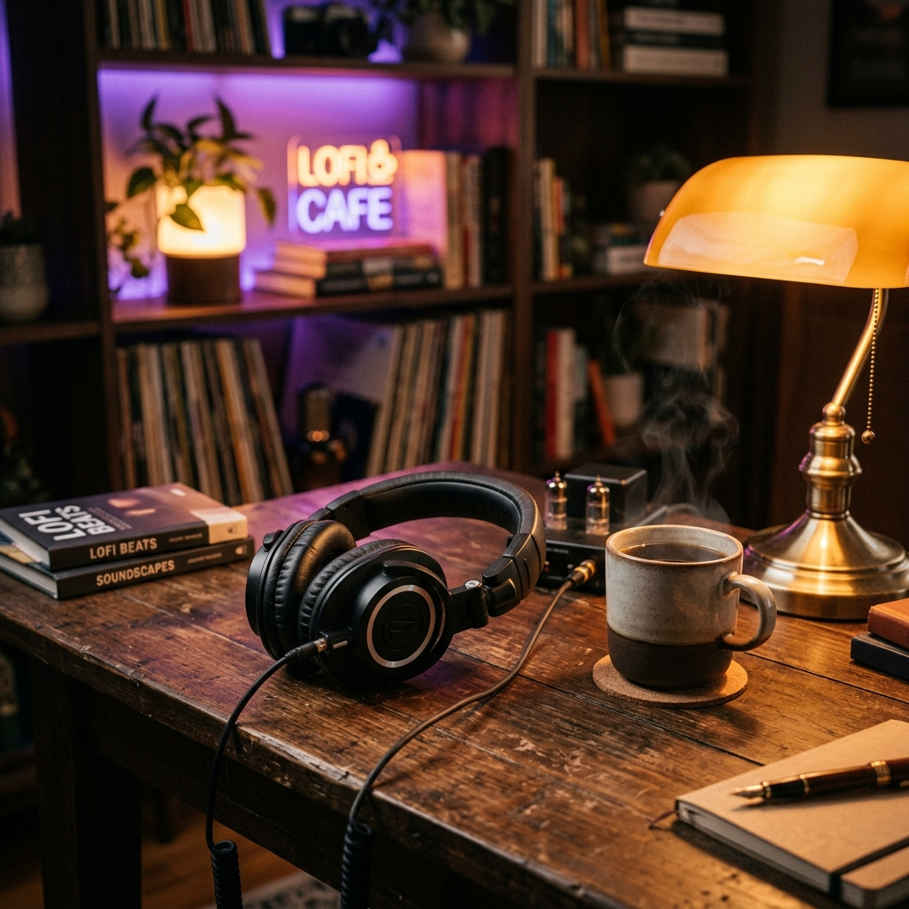

Panduan Memilih Headphone untuk Penikmat Lofi

Musik lofi bukan hanya tentang nada, tapi tentang suasana. Karakteristik suaranya yang khas—dengan noise piringan hitam, crackling, dan bass yang berat namun lembut—memerlukan perangkat audio yang mampu memproses detail tersebut tanpa membuatnya terasa kasar di telinga.
1. Sound Signature: Cari Frekuensi Warm
Headphone biasanya memiliki "signature" suara tertentu. Untuk lofi, hindari headphone yang terlalu "bright" (frekuensi tinggi yang tajam) karena bisa membuat suara crackling piringan hitam terasa mengganggu.
Sebaliknya, carilah headphone dengan profil suara "Warm". Profil ini memberikan penekanan yang lembut pada bass dan mid, sehingga instrumen piano atau saksofon dalam musik lofi akan terdengar lebih tebal dan menenangkan.
2. Open-Back vs Closed-Back
Jika Anda mendengarkan lofi di ruangan yang tenang, Open-Back Headphones adalah pilihan juara. Desain terbuka ini memberikan "soundstage" yang luas, membuat Anda merasa seolah-olah musik sedang diputar secara live di ruangan Anda.
Namun, jika Anda mendengarkan lofi untuk fokus di kantor atau kafe, Closed-Back Headphones tetap menjadi pilihan terbaik untuk isolasi suara maksimal agar beats tidak bocor keluar dan suara bising tidak masuk ke dalam.
Rekomendasi Cepat
Gunakan kategori "Focus & Study" di VCMusic Player saat menguji headphone baru Anda. Pastikan transisi antara piano dan drum pad terdengar 'smooth' tanpa distorsi yang tajam di telinga.
3. Kenyamanan untuk Mendengarkan Berjam-jam
Lofi sering digunakan untuk sesi belajar atau kerja yang lama. Pilihlah headphone dengan bantalan (earpads) yang empuk dan berat yang seimbang. Headphone jenis *over-ear* cenderung lebih nyaman daripada *on-ear* untuk pemakaian jangka panjang.
Kesimpulan
Headphone terbaik untuk lofi adalah yang tidak melelahkan telinga. Carilah kenyamanan dan karakter suara yang hangat untuk melengkapi playlist favorit Anda di VCMusic.
Sudah punya headphone kesayangan? Putar koleksi Lofi pilihan kami sekarang.
VCMusic Editorial Team
Mengkurasi tren dan teknologi musik terbaik untuk Anda.